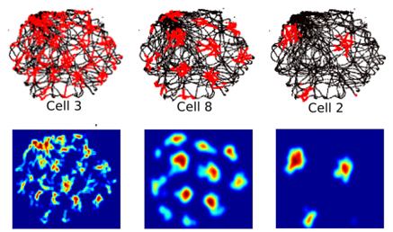
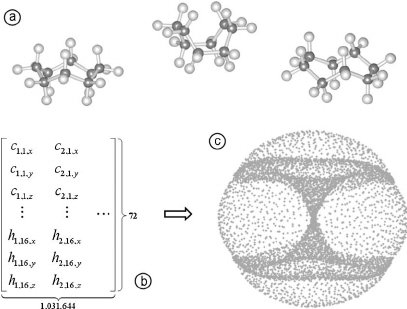
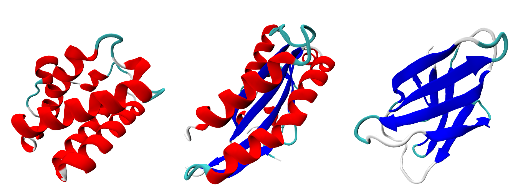

Persistent Homology
XIMENA FERNANDEZ
UK Centre for Topological Data Analysis
Durham University
EUTOPIA 2022

Outline
- Lecture 1. Persistent homology: theory and practice.
- Lecture 2. Applications in real data.
From Persistent homology to data analysis
Part 1:
- Grid Cells
- Cyclo Octane
Part 2:
- Classification of proteins
Grid cells
Grid cells
- Part of an environment-independent spatial coordinate system.
- Placed in the medial entorhinal cortex (mEC).
- Discovered by Edvard and May-Britt Moser in 2005.
T. Hafting, M. Fyhn, S, Molden, M.B. Moser, E.I. Moser. Microstructure of a spatial map in the entorhinal cortex. Nature. 2005 Aug; 436(7052) 801-806. - Awarded with Nobel Prize in Physiology or Medicine 2014.
Grid cells
- Part of an environment-independent spatial coordinate system.
- Placed in the medial entorhinal cortex (mEC).
- Discovered by Edvard and May-Britt Moser in 2005.
T. Hafting, M. Fyhn, S, Molden, M.B. Moser, E.I. Moser. Microstructure of a spatial map in the entorhinal cortex. Nature. 2005 Aug; 436(7052) 801-806. - Awarded with Nobel Prize in Physiology or Medicine 2014.

Topology of the neural activity
Toroidal topology of population activity in grid cells. Nature 602, 123–128 (2022)
Gardner R, Hermansen E, Pachitariu M, Burak Y, N, Dunn B, Moser M B, Moser E.
Topology of the neural activity
Gardner, R.J., Hermansen, E., Pachitariu, M. et al. Toroidal topology of population activity in grid cells. Nature 602, 123–128 (2022)

Topology of the neural activity
Gardner, R.J., Hermansen, E., Pachitariu, M. et al. Toroidal topology of population activity in grid cells. Nature 602, 123–128 (2022)
Experiment: Given an arena and a rat moving freely in the environment, they recorded simultaneously the activity of $N_{mEC}$ grid cells at each point $x$ in the arena for a period of time. For a discretization of the environment in $M$ bins and average over time of the spike rate, they obtained a pointcloud of $M$ points in $\mathbb R^{N_{mEC}}$.
Cyclo Octane
Cyclo Octane $C_8 H_{16}$

Cyclo Octane $C_8 H_{16}$
- The cyclo-octane molecule is a saturated eight-member cyclic compound with chemical formula $C_8 H_{16}$.
- It has received attention in computational chemistry because it has multiple conformations of similar energy and a complex potential energy landscape.
- Cyclo‐octane conformations can be described analytically using kinematic loop closure (Coutsias et al., 2005) or distance geometry (Portas et al. 2007).
Cyclo Octane $C_8 H_{16}$

- A single molecule consists of eight carbon atoms arranged in a ring, with each carbon atom being bound to two other carbon atoms and two hydrogen atoms.
- Under the influence of external chemical and physical forces, cyclo-octane assumes different forms, or conformations, in three-dimensional (3D) space.
- The locations of hydrogen atoms are completely determined by those of the carbon atoms, so each conformation may be represented by a point in $\mathbb{R}^{24}$.
Cyclo Octane $C_8 H_{16}$
- The space of all possible conformations forms the union of a Klein bottle and a sphere along two circles. It is known that the conformations located on the sphere component are constrained by a specific type of symmetry, while the conformations on the Klein bottle are not.
Hands on:
computational topology in action
- Analysis of the topology of the real datasets.
Classification of proteins
Classification of proteins
Classification of proteins
- The problem: Classify the secondary structure of proteins from its embedding in $\mathbb{R}^3$.
Classification of proteins
- The problem: Classify the secondary structure of proteins from its embedding in $\mathbb{R}^3$.
- Database: SCOPe.
Hands on:
computational topology in action
- Computation of persistent homology in Python.